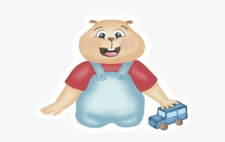
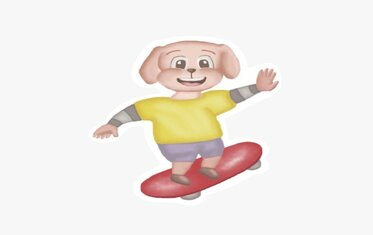

Resumen
Este cuento está basado en la historia del hamster Dingo y su amigo el perrito Dogo, muy emocionados pasan la tarde jugando en el patio trasero, ambos niños empiezan a hacer sus travesuras y sacan todos los juguetes ocasionando un gran desorden. La mamá hámster les pidió que ordenaran pero los niños no la escucharon y siguieron jugando. Descubriremos cuales son las consecuencias de la desobediencia de Dingo y Dogo.
Personajes
Dingo
Es un pequeño hámster que tiene 4 años, es gordito, chiquito y travieso.
Dogo
Es un perrito Shih Tzu de 4 años, es travieso, amigable, divertido y curioso.
Mamá Hámster
Es un hámster de 30 años, es amorosa, dedicada, siempre trata de enseñar los valores a Dingo y Dogo